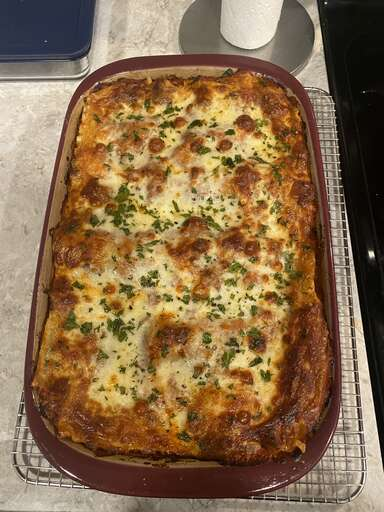

Lasagna

Description
Lasagna is a traditional Italian dish that consists of layers of pasta sheets, typically made from durum wheat semolina, layered with various ingredients such as tomato sauce, cheese (usually mozzarella and/or ricotta), meat (such as ground beef or sausage), and vegetables (such as spinach or zucchini). The dish is typically baked in an oven until the cheese on top is melted and bubbly. Lasagna is often served as a main course and is popular worldwide. It is a hearty and comforting dish that can be customized to suit different tastes and dietary preferences.
Ingredients
- Lasagna noodles (made from durum wheat semolina)
- Tomato sauce or marinara sauce
- Ground beef or Italian sausage (or a combination of both)
- Ricotta cheese
- Shredded mozzarella cheese
- Grated Parmesan cheese
- Chopped onions and garlic
- Chopped bell peppers
- Chopped mushrooms
- Chopped spinach or other vegetables (optional)
Steps
- Preheat the oven to 375°F (190°C).
- Cook the lasagna noodles according to the package instructions. Drain them and rinse with cold water to prevent sticking.
- In a large skillet, heat some olive oil over medium heat. Add chopped onions, garlic, bell peppers, and mushrooms, and sauté until they are softened.
- Add the ground beef or Italian sausage to the skillet and cook until browned. Drain off any excess fat.
- Stir in the tomato sauce or marinara sauce and season with salt, pepper, and Italian seasoning. Simmer for a few minutes until the flavors are well combined.
- In a separate bowl, mix the ricotta cheese with some Parmesan cheese and Italian seasoning.
- Assemble the lasagna by spreading a layer of the meat sauce in the bottom of a baking dish. Add a layer of the cooked lasagna noodles on top, followed by a layer of the ricotta cheese mixture. Repeat these layers, ending with a layer of meat sauce on top.